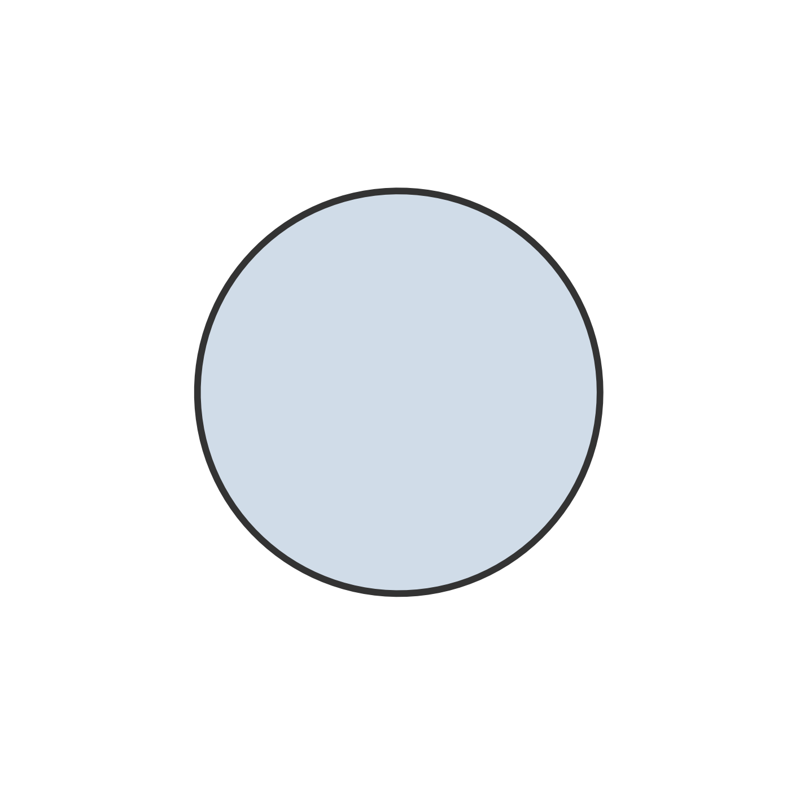

Chapter 4 Model Comparison
Model comparison allows us to compare multiple hypotheses and identify which is the most supported by the data (McElreath, 2020). First, we need to formalize models according to our hypotheses. Subsequently, we can evaluate which is the most supported model among those considered according to the data using the AIC and BIC (Akaike, 1973; Schwarz, 1978; Wagenmakers & Farrell, 2004).
4.1 Formalize Models
Following the same reasons as before (see Section~2), we consider Zero Inflated Negative Binomial Mixed-Effects models. Again, we consider only the role of gender as a fixed effect and children’s classroom ID as a random effect for \(p\). Whereas, considering \(\mu\), we define four different models to take into account the different theoretical perspectives:
fit_ext_zero: we consider only the effect of gender. This model assumes that attachment plays no role.fit_ext_mother: we consider the additive effects of gender and mother attachment. This model supports the idea that only mother attachment is important (Monotropy Theory).fit_ext_additive: we consider the additive effects of gender, mother attachment, and father attachment. This model supports the idea that both mother attachment and father attachment are important, but not their interaction (Hierarchy Theory or Independence Theory).fit_ext_inter: we consider the additive effects of gender and the interaction between mother attachment and father attachment. This model supports the idea that the interaction between mother attachment and father attachment is important (Integration Theory).
Moreover, in all models, we include children’s classroom ID as a random effect to take into account teachers’ different ability to evaluate children’s problems. Using R formula syntax, we have
# formula for p (same for all models)
p ~ gender + (1|ID_class)
# formula for mu
# fit_ext_zero
mu ~ gender + (1|ID_class)
# fit_ext_mother
mu ~ gender + mother + (1|ID_class)
# fit_ext_additive
mu ~ gender + mother + father + (1|ID_class)
# fit_ext_inter
mu ~ gender + mother * father + (1|ID_class)4.2 AIC and BIC Results
After estimating the models, the AIC and BIC values together with their relative weights are computed. Results are reported in Table~4.1.
| Model | Df | AIC | AIC\(_{weights}\) | BIC | BIC\(_{weights}\) | ||
|---|---|---|---|---|---|---|---|
| fit_ext_zero | 6 | 3865.1 | 0.00 | 3898.3 | 0.78 | ||
| fit_ext_mother | 9 | 3853.4 | 0.92 | 3900.8 | 0.22 |  | |
| fit_ext_additive | 12 | 3858.4 | 0.08 | 3920.0 | 0.00 | ||
| fit_ext_inter | 21 | 3867.6 | 0.00 | 3971.9 | 0.00 |
According to AIC, the most likely model is fit_ext_mother (92%) and the second most likely model is fit_ext_additive (8%) given the data and the set of models considered. According to BIC, instead, the most likely model is fit_ext_zero (78%) and the second most likely model is fit_ext_mother (22%) given the data and the set of models considered.
To interpret these results, note that, AIC tends to select more complex models that can better explain the data, on the contrary, BIC penalizes complex models to a greater extent. As pointed out by Kuha (2004), using the two criteria together is always advocated as agreement provides reassurance on the robustness of the results and disagreement still provides useful information for the discussion. We can say that there is evidence in favour of the role of mother attachment but probably this effect is small.
4.3 Selected Model
Considering the model fit_ext_mother, we can run an analysis of deviance to evaluate the significance of the predictors.
car::Anova(fit_ext_mother)
## Analysis of Deviance Table (Type II Wald chisquare tests)
##
## Response: externalizing_sum
## Chisq Df Pr(>Chisq)
## gender 17.732 1 2.544e-05 ***
## mother 17.398 3 0.0005851 ***
## ---
## Signif. codes: 0 '***' 0.001 '**' 0.01 '*' 0.05 '.' 0.1 ' ' 1Results confirm a statistically significant effect of gender and mother attachment. The model summary is reported below.
summary(fit_ext_mother)
## Family: nbinom2 ( log )
## Formula: externalizing_sum ~ gender + mother + (1 | ID_class)
## Zero inflation: ~gender + (1 | ID_class)
## Data: data_cluster
##
## AIC BIC logLik deviance df.resid
## 3853.4 3900.8 -1916.7 3833.4 837
##
## Random effects:
##
## Conditional model:
## Groups Name Variance Std.Dev.
## ID_class (Intercept) 0.07747 0.2783
## Number of obs: 847, groups: ID_class, 50
##
## Zero-inflation model:
## Groups Name Variance Std.Dev.
## ID_class (Intercept) 0.766 0.8752
## Number of obs: 847, groups: ID_class, 50
##
## Dispersion parameter for nbinom2 family (): 1.81
##
## Conditional model:
## Estimate Std. Error z value Pr(>|z|)
## (Intercept) 0.98649 0.10770 9.160 < 2e-16 ***
## genderM 0.33533 0.07964 4.211 2.54e-05 ***
## motherAnxious 0.24321 0.10338 2.353 0.01864 *
## motherAvoidant 0.30803 0.10910 2.823 0.00475 **
## motherFearful 0.52680 0.13135 4.011 6.05e-05 ***
## ---
## Signif. codes: 0 '***' 0.001 '**' 0.01 '*' 0.05 '.' 0.1 ' ' 1
##
## Zero-inflation model:
## Estimate Std. Error z value Pr(>|z|)
## (Intercept) -1.1211 0.2432 -4.609 4.05e-06 ***
## genderM -0.6990 0.2491 -2.807 0.005 **
## ---
## Signif. codes: 0 '***' 0.001 '**' 0.01 '*' 0.05 '.' 0.1 ' ' 1Figure 4.1: Marginal predicted values according to gender and mother attachment (\(n_{subj} = 847\)).
Post-hoc tests are run to evaluate differences between mother attachment styles, considering pairwise comparisons and adjusting p-values according to multivariate t-distribution. Results are reported below,
emmeans::contrast(emmeans::emmeans(fit_ext_mother, specs = ~ mother ),
"pairwise", adjust = "mvt")
## contrast estimate SE df t.ratio p.value
## Secure - Anxious -0.2432 0.1034 837 -2.353 0.0859
## Secure - Avoidant -0.3080 0.1091 837 -2.823 0.0245
## Secure - Fearful -0.5268 0.1313 837 -4.011 0.0004
## Anxious - Avoidant -0.0648 0.0981 837 -0.661 0.9107
## Anxious - Fearful -0.2836 0.1216 837 -2.333 0.0902
## Avoidant - Fearful -0.2188 0.1276 837 -1.714 0.3135
##
## Results are averaged over the levels of: gender
## Results are given on the log (not the response) scale.
## P value adjustment: mvt method for 6 testsOverall, results indicate that Males have more externalizing problems than Females. Regarding mother attachment, Fearful and Avoidant children have more problems than Secure children. Moreover, also the difference between Anxious and Secure children and the difference between Anxious and Fearful children have a low (but not statistically significant) p-value.
To evaluate the fit of the model to the data, we computed the Marginal \(R^2\) and the Conditional \(R^2\).
performance::r2(fit_ext_mother)
## Warning: mu of 4.2 is too close to zero, estimate of random effect variances may
## be unreliable.
## # R2 for Mixed Models
##
## Conditional R2: 0.168
## Marginal R2: 0.071We can see that the actual variance explained by fixed effects is around 7%, not bad for psychology.
Conclusions
Considering attachment theoretical perspectives, results indicate only the role of mother attachment so we can support the Monotropy Theory. Note, however, that the compared models contain no information regarding the expected direction of the effects but we only include/exclude predictors.